Neural stem cells
We study how neural stem cells are regulated during cortical and hippocampal development and how they generate organised neural tissue.
University of Aberdeen
Understanding human brain development using advanced 3D models
We study how neural stem cells build the developing human brain and how environmental signals alter this process. Our work combines human fetal tissue with organoids, cerebroids and assembloids to investigate cortical and hippocampal development.
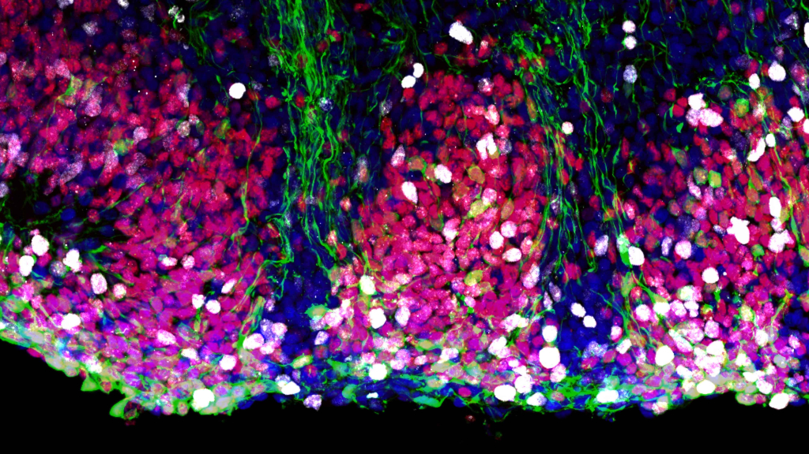
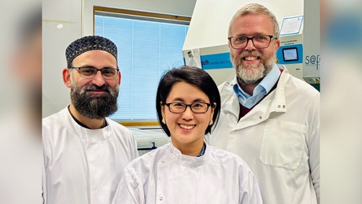
Latest research
Modeling maternal immune activation in 3D ex vivo human fetal brain cerebroids reveals IL-17A-driven disruption of cortical development
Our human cerebroid model reveals how the inflammatory signal IL-17A acts on neural stem cells and alters early cortical development.
Read the paper Read the press releaseWhat we study
We investigate how the human brain develops in health and disease. Our work centres on neural stem cells, tissue organisation and the environmental signals that shape early developmental trajectories.
We study how neural stem cells are regulated during cortical and hippocampal development and how they generate organised neural tissue.
We develop organoids, cerebroids and assembloids incorporating microglia, vasculature and other cell types, as well as models of the developing choroid plexus.
We examine how maternal inflammation, stress and other physiological signals alter brain development and may shape trajectories relevant to neurodevelopmental conditions.
We use human iPSC-derived brain organoids and multicellular assembloids to investigate mechanisms relevant to neurodegenerative disease, including Alzheimer's disease. These models allow us to examine interactions among neurons, glia and vascular cells during disease-associated stress and inflammation.
We combine human experimental models with pharmacological and cytokine treatments, high-resolution imaging, histology, single-cell transcriptomics and spatial RNA sequencing.
Our team
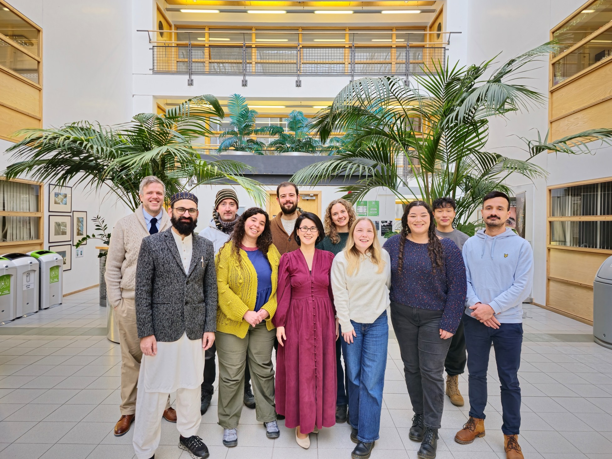
Group Leader
Eunchai is a developmental neuroscientist and co-leads the Kang/Berg Lab. Her research uses human stem cell-derived models to investigate cortical development, neurogenesis and how environmental influences alter the developing brain.

Group Leader
Daniel is a developmental neuroscientist and co-leads the Kang/Berg Lab. His research focuses on neural stem cells, hippocampal development and adult neurogenesis, combining human tissue with advanced 3D experimental models.
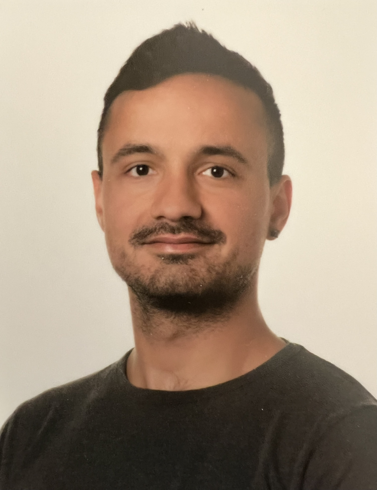
Research Technician · Joined 2024
Richard is a Research Technician at the Institute of Medical Sciences, University of Aberdeen. He completed a bachelor's degree in Cell and Molecular Biology at the University of Szeged, Hungary, and a master's degree in Molecular Medicine at the University of Aberdeen. His experience includes RNA, DNA and protein work, histology, microscopy, tissue culture and work with laboratory animals.
Richard aims to continue broadening his knowledge and technical skills. Outside work, he enjoys hiking, gardening, aquascaping and keeping exotic pets.
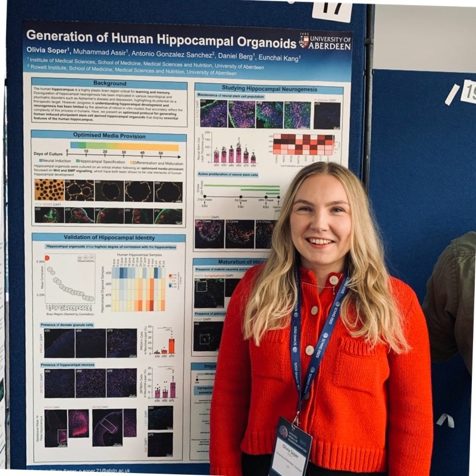
Postdoctoral Researcher · Joined 2021
Olivia joined the Kang/Berg Lab in 2021 for her PhD, where she developed and characterised human iPSC-derived hippocampal organoids for studying neurogenesis. Before moving to Aberdeen, she completed a BSc in Pharmacology and Physiology and an MSc in Neuroscience at the University of Manchester.
After completing her PhD in 2025, Olivia continued in the lab as a postdoctoral researcher. She now investigates how pharmacological compounds influence neural stem cell behaviour and neurogenesis in hippocampal organoids.
Outside the lab, she maintains another thriving culture: her sourdough starter. She is also a regular at the gym and recently taught herself to crochet.
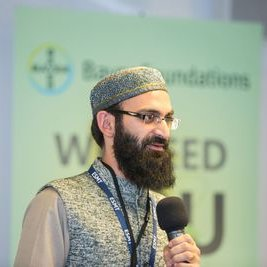
Research Fellow · Stem Cell Biologist
Assir is a stem cell biologist driven by a simple but ambitious goal: to build better, and perhaps bigger, brains in the lab. His research focuses on developing and refining human stem cell-based models to understand brain development and disease, with a particular interest in creating new systems and pushing experimental boundaries.
Originally trained in medicine, Assir graduated from Allama Iqbal Medical College in Pakistan, completed a residency in Internal Medicine and later served as an Assistant Professor of Medicine. His journey from clinic to lab led him to the Kang/Berg Lab, where he completed his PhD and continues to explore the interface between biology and engineering.
At heart, Assir is endlessly inquisitive and eager to try new ideas, particularly when they involve building something that has not been built before. Outside the lab, he is a poet at heart and a proud dad to four energetic boys.
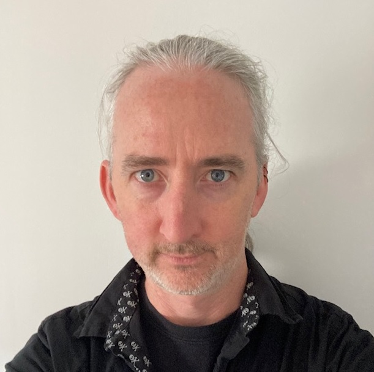
Computational Biologist · Joined 2024
David is a computational biologist who joined both the Morgan and Kang/Berg labs in October 2024. He has extensive experience in genomics across a range of species, having worked at the University of Nottingham, INRAE Toulouse and the Roslin Institute. He applies single-cell omics to brain organoids to study neurological disorders.
Much of David's spare time is spent entertaining his two rescue dogs and his children. He enjoys international rugby, K-dramas, B-movies, tabletop gaming, painting and playing guitar. He is also a co-founder of BeeBytes Analytics CIC, a honey bee genetics community interest company.
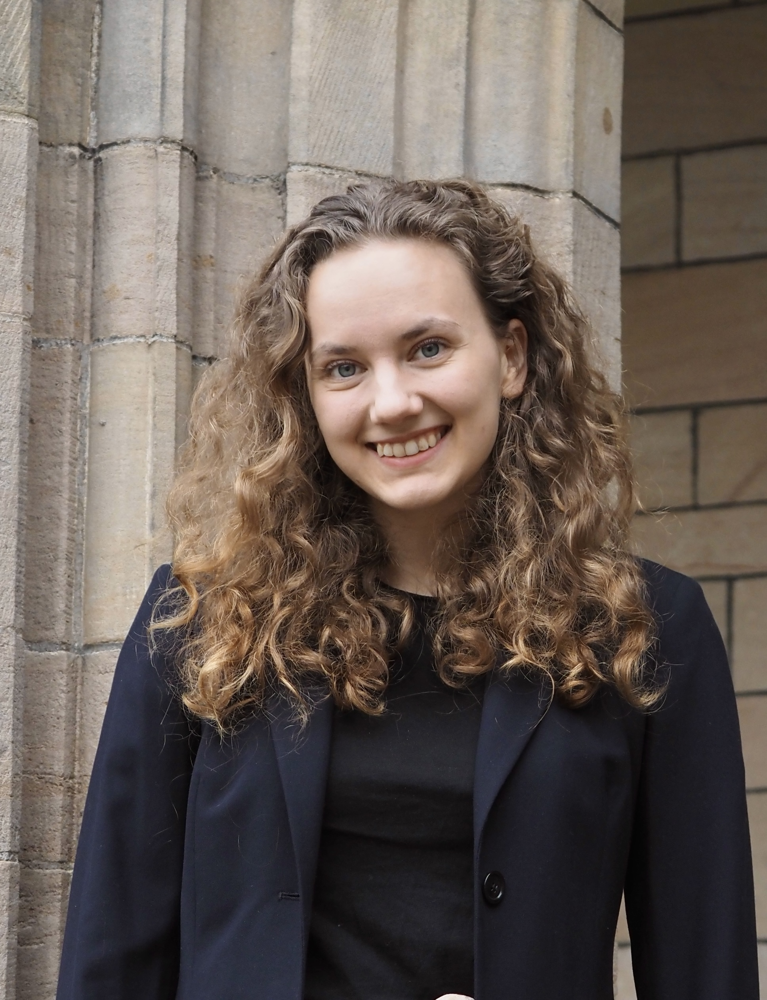
PhD Student · Joined 2024
Sara first joined the Kang/Berg Lab in 2022 as an undergraduate student assistant while completing her BSc in Biomedical Sciences (Anatomy) at the University of Aberdeen. Rooted in her anatomical training, she developed a strong interest in the structural organisation of the brain and how it is shaped during development. As an Amgen Scholar in 2023, Sara completed a summer placement at Ludwig Maximilian University of Munich, where she investigated the link between mutations in a tubulin gene and neurodevelopmental disease.
Sara returned to the lab for her PhD in 2024. She now investigates cortical interneuron development and models maternal inflammation using 3D human brain cultures. Her work connects detailed anatomical understanding with dynamic models of early neurodevelopment.
Outside the lab, Sara enjoys exploring Munros and coastal paths, walking in botanical gardens, attending weekly Pilates sessions and watching period dramas. She also cares for a growing collection of houseplants.
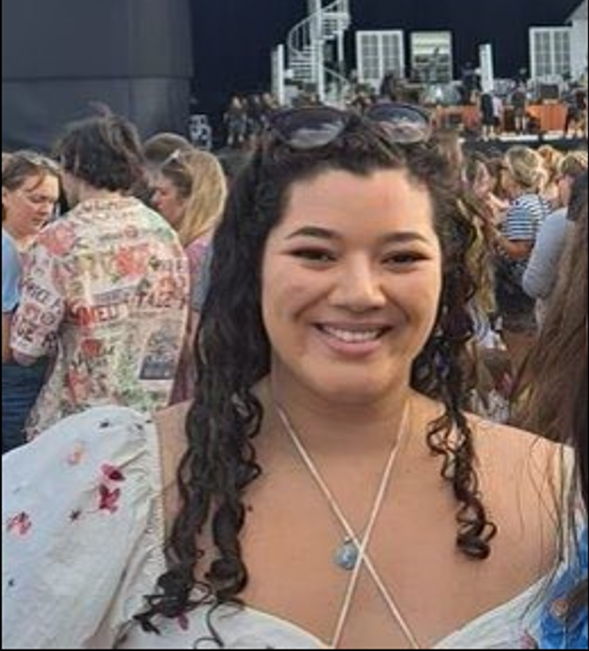
PhD Student · Joined 2023
Gaby joined the Kang/Berg Lab in 2023 for her PhD, using iPSC-derived brain organoids to investigate neuroimmune interactions in neurodevelopmental and neurodegenerative conditions. She aims to develop brain organoid cultures incorporating microglia and vasculature to better represent the human brain.
Before moving to Aberdeen, Gaby rowed competitively for 12 years and represented the University of Alabama while completing her BSc in Biology. She later completed an MSc in Stem Cell Technology and Regenerative Medicine at the University of Nottingham, where she discovered her interest in stem cells and organoid culture. In 2022, she worked in industry as a Research Scientist at Histologix before returning to academia.
Outside the lab, Gaby enjoys walking along Aberdeen beach, lifting at the gym and cooking, particularly trying to recreate her mum's authentic Mexican food.
Mario Yanakiev, PhD · Former PhD Student
Delia Ramirez, PhD · Former Postdoctoral Researcher
Olivia Soper · PhD completed 2025 · Now a Postdoctoral Researcher at the University of Aberdeen
Do Hyeon Gim · PhD completed 2025 · Now a Postdoctoral Researcher at the University of Oxford
Muhammad Z. K. Assir · PhD completed 2025 · Now a Postdoctoral Researcher at the University of Aberdeen
Former undergraduate and master's students: Beth Cavanagh, Naomi Sidabutar, Madhura Sham Nalawade, Malgorzata Michalik, Charlotte Colombo, Alicja Grzelak, Juri Westendorf, Anthony Gyening-Yeboah, Mohammad Kahn, Florence Roberts and Georgia Hepburn. List not exhaustive.
Selected work
Modeling maternal immune activation in 3D ex vivo human fetal brain cerebroids reveals IL-17A-driven disruption of cortical development
Harvesting more reads from single-cell combinatorial barcoding data with scarecrow
Deciphering Cell-Type and Temporal-Specific Matrisome Expression Signatures in Human Cortical Development and Neurodevelopmental Disorders via scRNA-Seq Meta-Analysis
A human hippocampal organoid model with sustained neural stem cells reveals state shifts under glucocorticoid stress
DISC1 regulates neurogenesis via modulating kinetochore attachment of Ndel1/Nde1 during mitosis
Brain-region-specific organoids using mini-bioreactors for modeling ZIKV exposure
A Common Embryonic Origin of Stem Cells Drives Developmental and Adult Neurogenesis
Single-cell RNA-seq with Waterfall reveals molecular cascades underlying adult neurogenesis
Interplay between a mental disorder risk gene and developmental polarity switch of GABA action leads to excitation-inhibition imbalance
Early postnatal exposure to isoflurane causes cognitive deficits and disrupts development of newborn hippocampal neurons via activation of the mTOR pathway
Work with us
We welcome enquiries from motivated students and researchers interested in human brain development.
We are happy to support applications for independent postdoctoral fellowships. Please contact Daniel or Eunchai early to discuss potential projects and suitable funding schemes.
Undergraduate students interested in summer research projects are also encouraged to get in touch. The British Society for Developmental Biology offers Gurdon Studentships for summer vacation work.
Around Aberdeen
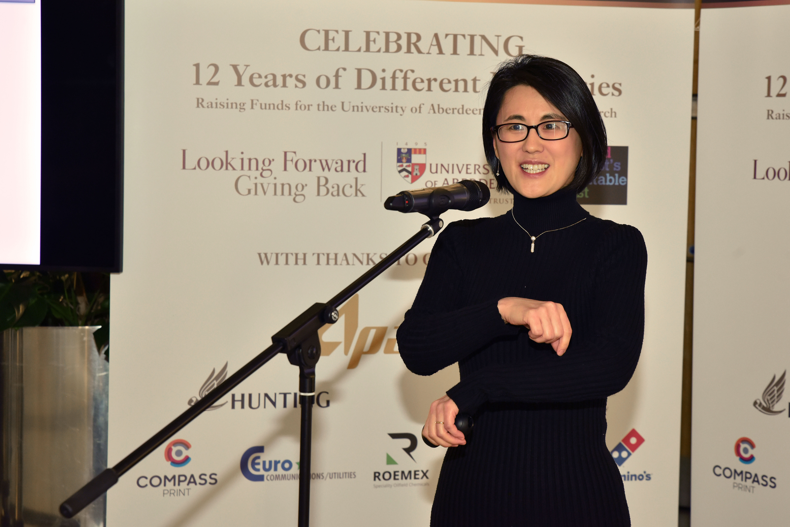
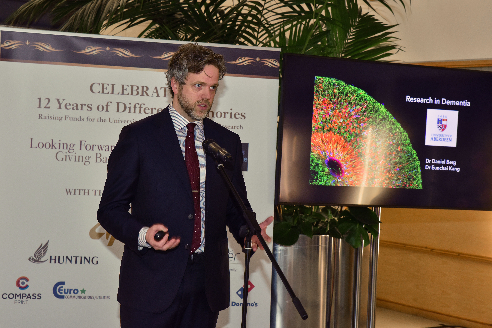
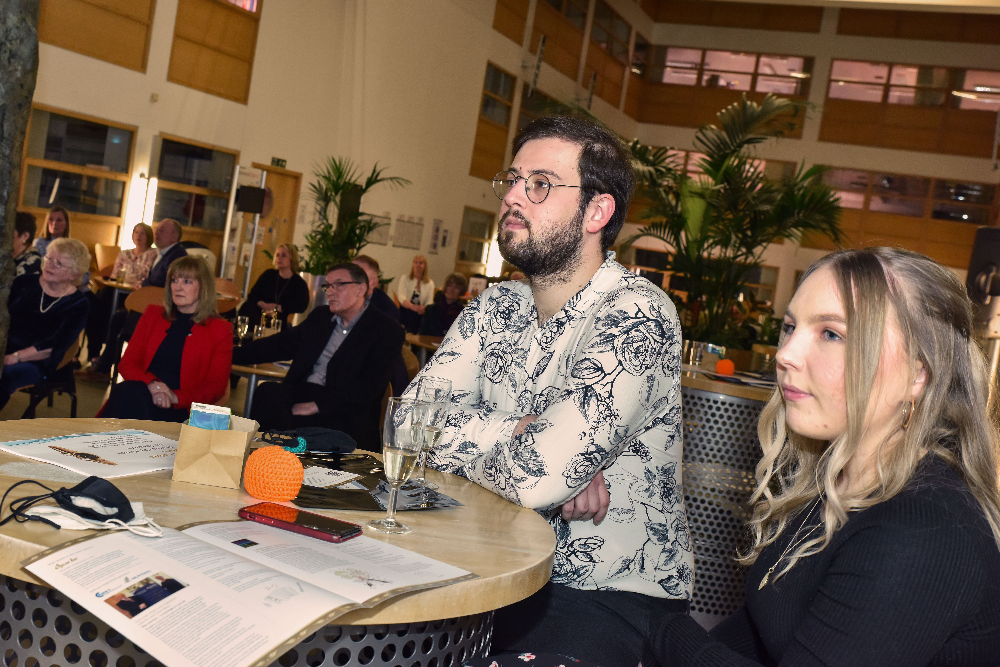


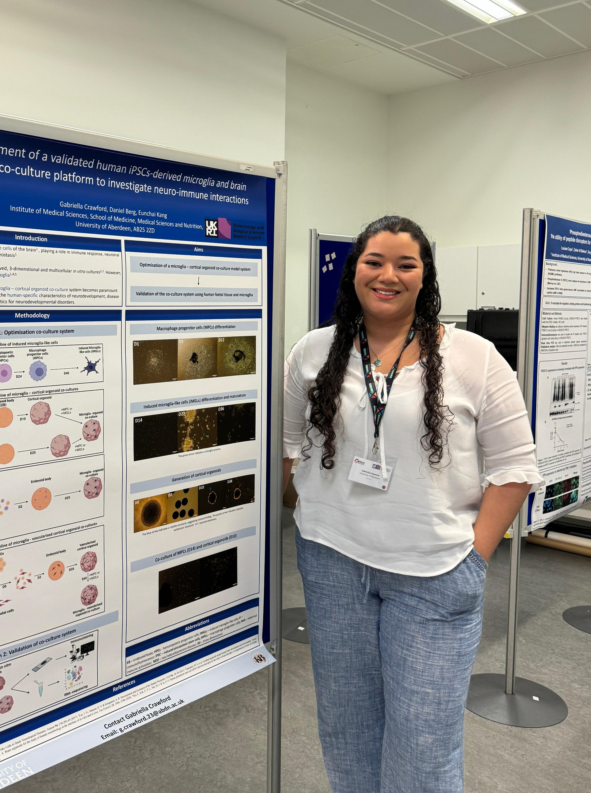
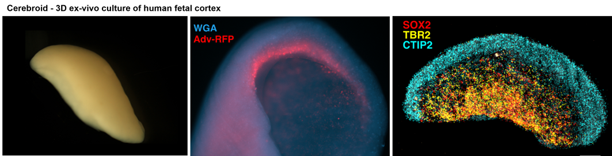

Get in touch
Kang/Berg Lab
Institute of Medical Sciences
University of Aberdeen
Foresterhill, Aberdeen AB25 2ZD, Scotland
Eunchai.Kang(at)abdn.ac.uk Daniel.Berg(at)abdn.ac.uk LinkedIn